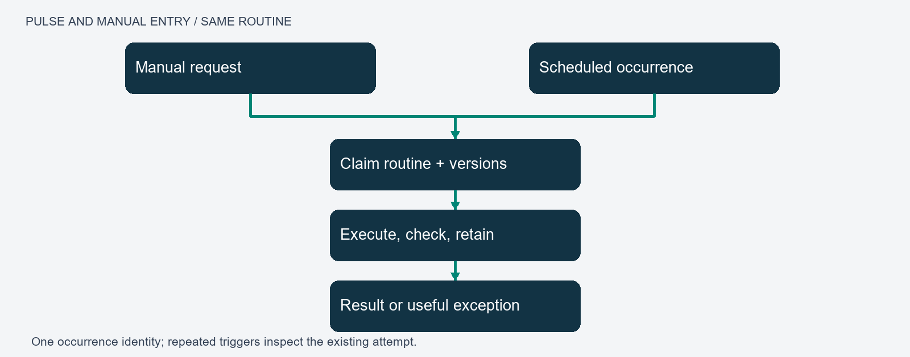
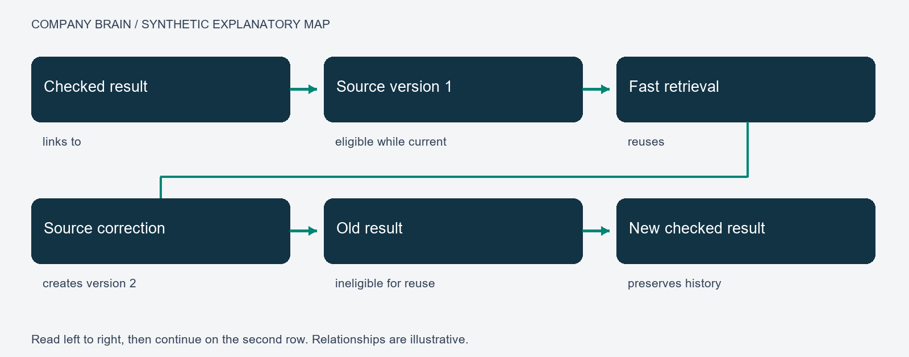

Company Brain: From Human Learning to Accountable Agent Orchestration
Durable context, transferable procedures and evidence-bound adaptation
Alexandru Rada · 11 October 2026 · Research manuscript, edition 1.1
Abstract
Agent systems can complete individual tasks while failing to preserve the conditions that made those tasks successful. Instructions disappear into conversations, corrections compete with obsolete records, and a method that worked once becomes a general rule without evidence of transfer. This paper develops Company Brain as an architecture for preserving useful consequences of work. Its unit of accumulation is a scoped relationship among an objective, governing sources, a procedure, an observed result and an evaluation. The architecture separates retrieval from deliberative execution, preserves distinct classes of memory, binds results to source versions, and places skill promotion behind explicit acceptance conditions. Research on worked examples, retrieval, experiential agents and context maintenance motivates these mechanisms. A formal account specifies eligibility, context allocation, state transitions and resource measures. Worked scenarios connect correction and procedural abstraction to later tasks. A public deterministic fixture demonstrates five narrow retrieval invariants; broader gains in task performance and transfer are specified as controlled experiments. The contribution is a testable architectural synthesis in which continuity is maintained through evidence and revision rather than indiscriminate retention.
Keywords: agent orchestration; external memory; procedural learning; context engineering; provenance; evaluation.
1. Continuity as an engineering problem
Work does not end when an answer is produced. A completed task may reveal that an instruction was ambiguous, a source was obsolete, a dependency was unavailable or a method was unexpectedly useful. These consequences matter because a later task may depend on precisely the distinction that the earlier interaction resolved. An organisation that preserves only the finished answer loses much of the knowledge required to reproduce or revise it.
Company Brain addresses this problem through a persistent environment around a general-purpose model. The model contributes interpretation and generation; external records supply current context; tools carry out operations; evaluations determine which consequences warrant reuse. Improvement is attributed to this arrangement only when subsequent performance supports that conclusion. A growing archive, an elaborate graph and a confident agent are individually insufficient measures of accumulated capability.
The thesis is that useful experience becomes transferable when the system preserves both what happened and the conditions under which it was useful. This requires more than semantic similarity. A previously correct answer may belong to another project. A successful procedure may depend on a tool that has changed. An accepted preference may govern the form of a report without establishing the truth of its claims. Retrieval must distinguish relevance from authority, and learning must distinguish a reusable principle from the incidental details of its first example.
Four research questions organise the argument. What information must survive a task for its result to remain interpretable? How can a correction reliably affect dependent work? Under what conditions does an extracted procedure improve a different task? What evidence establishes that the resulting environment is more useful than a simpler system? The architecture supplies explicit contracts for the first two questions and an experimental design for the latter two. Its intended audience is researchers and engineers concerned with continuing agent work.
2. Learning principles and engineering hypotheses
2.1 Worked examples and the preservation of conditions
Sweller and Cooper examined worked examples in algebra learning [1]. Their relevance here is methodological: an example exposes intermediate relations that a final answer conceals, while competence must still be assessed on new problems. The engineering hypothesis is that an agent benefits from a procedure whose prerequisites, decisions and checks are retained, rather than from a transcript copied wholesale. This hypothesis requires evaluation in agent tasks; a result about human instruction does not supply that evaluation.
A retained example consequently contains more than a successful sequence. It identifies the initial state, intended consequence, constraints and observation that distinguished success from apparent success. In a software repair, an error message and a patch are incomplete without the failing input and regression check. In a report, the corrected total is incomplete without its units, reporting period and governing definition. The record supports recognition of a comparable problem while exposing reasons why the method might not apply.
2.2 Feedback relative to a consequence
Kahneman and Klein associate reliable intuitive expertise with learnable environmental regularities and opportunities for informative feedback [2]. For an engineered learning environment, the corresponding requirement is to state what feedback evaluates. A unit test supplies evidence about specified behaviour. An author's approval supplies evidence about a passage's suitability for an intended use. A source correction changes the admissible factual basis. These signals should not be compressed into an undifferentiated success flag.
An answer may be elegantly written but use an obsolete policy. Approval of its language cannot validate its policy claim. Conversely, a mechanically correct result may fail because it is incomprehensible to its audience. An evaluation record preserves these dimensions independently. A later agent can then reuse a writing method without inheriting a factual error, or retain a correct calculation while revising its presentation.
2.3 External adaptation and contextual limits
Retrieval-augmented generation separates generated output from the external information resource consulted during generation [3]. Organisational adaptation can therefore occur through accessible records while model parameters remain fixed. The retrieval and update process becomes an explicit object of evaluation.
Long context alone does not settle whether relevant evidence is used. Liu and colleagues found that performance in their long-context tasks varied with the position of relevant information [4]. This motivates bounded, purpose-driven context construction and separate measurements of source coverage and answer quality. It does not establish a universal optimal context length. The practical question is which evidence a task needs and whether the system uses it correctly.
3. Research mechanisms and architectural synthesis
Reflexion studies retained linguistic feedback across attempts [5]. ExpeL investigates extracting insights from experience for later decisions [6]. These mechanisms motivate a candidate-lesson stage: an interpretation of a result can guide further work without immediately becoming accepted organisational knowledge. The system retains the evidence through which that lesson can be challenged.
Voyager demonstrates a skill-library approach in Minecraft, including retrieval and composition of executable skills [7]. Agent Workflow Memory induces reusable workflows and selectively supplies them during web navigation [8]. Their relevance is procedural: retained capability can be more structured than a summary of facts. Their empirical results remain specific to their experimental conditions. Company Brain adopts prerequisites, versioned procedures and transfer tests as design obligations rather than importing those performance estimates.
Agentic Context Engineering treats evolving context as a maintained playbook and studies structured incremental updates [9]. This addresses a related maintenance problem: replacing a whole context with a shorter summary can discard distinctions needed later. Company Brain proposes local, attributable changes with recoverable predecessors. An update is evaluated for its effect on affected tasks, not merely for improved wording.
Research on self-correction identifies settings in which another reasoning pass without adequate external feedback fails to improve reliability [10]. A reviewer role can provide a useful perspective, but its label establishes neither independence nor correctness. Where possible, acceptance rests on observable behaviour, source comparison and reproducible checks. Where judgment is unavoidable, the evaluator and basis of judgment remain explicit.
The synthesis connects six relations: objective to authority, authority to eligible evidence, evidence to procedure, procedure to observed execution, execution to evaluation, and evaluation to retained consequence. Each relation can fail even when neighbouring components appear healthy. This relational focus distinguishes a continuity mechanism from a collection of files or agent role descriptions. Provenance standards offer a compatible vocabulary for entities, activities and responsible agents [12]; a provenance record remains evidence of attribution rather than a certificate of truth.
4. A formal account of retained work
4.1 Scope and eligibility
Let a memory record r contain identity, type, project scope, version, source dependencies, status, content and evidence references. Type distinguishes factual claims, work episodes, decisions, preferences, procedures and operational state. Status distinguishes candidate, accepted, rejected and superseded uses. Acceptance always concerns a specified purpose; it does not turn every statement in a record into an independently verified fact.
For task q at time t, define eligibility as a conjunction:
E(r, q, t) = scope(r, q) AND authority(r, q) AND accepted(r, q) AND current(r, t) AND intact(r).
Each term requires a host check. A project label can filter records but cannot authenticate a user. A hash can detect artifact change but cannot establish that its content was true. A source-version match is useful only if source changes are registered. These distinctions determine the implementation's defensible claims.
Eligibility precedes relevance ranking. Otherwise a highly similar but unauthorised or superseded record can displace valid evidence. After filtering, selection follows current acceptance criteria. Missing support is a meaningful result: the agent may need to research, abstain or request a material clarification rather than manufacture continuity.
4.2 Fixed models and changing context
Let theta denote fixed model parameters, q_t a task, M_t retained state, and R an eligibility-aware retrieval function. Task context is C_t = R(q_t, M_t). The model-and-tool procedure produces y_t = F_theta(q_t, C_t, T_t), where T_t denotes available tool contracts and observed results. Evaluation V assesses y_t against the task. The memory transition is M_(t+1) = U(M_t, q_t, y_t, V_t), with U restricted by version and acceptance rules.
This representation locates adaptation in retrieval, procedures and retained state. It also separates causes. Improvement after a model upgrade cannot be attributed solely to memory; improvement after a larger tool budget cannot be attributed solely to procedural reuse. Evaluation must hold these variables fixed or report their changes.
4.3 Context and retrieval measures
A context budget includes governing instructions, selected evidence, tool descriptions and output reserve. If their token costs are g, e, u and o, feasibility requires g + e + u + o <= B, where B is the available budget. Selection preserves decisive evidence and constraints before optional background. Compression is acceptable only if task-relevant distinctions survive it.
Reciprocal rank fusion supplies a baseline for combining ranked lists: score(r) = sum_j 1 / (k + rank_j(r)), with absent records contributing zero and k a fixed positive constant [11]. Ranking does not alter eligibility. Its value must be compared with simpler selection under a shared corpus and budget.
Retrieval coverage is the number of retrieved relevant sources divided by the number of relevant sources for a task with known support. Tasks with no supporting source require a separate unsupported-task outcome. Coverage and correctness are measured separately because finding a source does not establish that an answer accurately represents it.
5. From task to checked consequence
A task contract identifies objective, owning project, permitted effects, source versions, dependencies, output destination, acceptance criteria and execution bounds. Its purpose is observable completion. The contract distinguishes producing an artifact from checking that artifact and obtaining required acceptance.
The proposed execution sequence is prepared, claimed, running, evaluated and terminal. Terminal outcomes distinguish accepted, failed, blocked and cancelled work. A claim identifies the responsible executor and expected record version. A second executor does not assume ownership merely because the first has been quiet. After interruption it reconciles the recorded attempt and external effects before deciding whether a retry is safe.
An operation identity addresses duplicate delivery, not every uncertainty. If a request times out after a provider performed the action, a new request can duplicate it. The executor first queries the original operation where possible. If the provider has neither an idempotency contract nor a reliable status query, the result remains uncertain and requires a bounded recovery decision. A local ledger alone cannot promise exactly-once effects in arbitrary services.
Handoffs preserve task identity, source versions, writable scope, dependencies and acceptance evidence. A worker returns artifact identity, observations and unresolved gaps. The coordinator checks that the returned artifact is the one evaluated. A completion statement is an assertion to inspect, not the inspection itself.
Figure 1. Explanatory task map. Arrows identify dependencies from objective to retained consequence. A map records relationships; successful execution requires separate evidence.
6. Retrieval, deliberation and procedural abstraction
6.1 Fast reuse and deliberative work
The first layer resolves purpose and retrieves eligible known material. A narrowly specified answer may be reused when its question, scope, source versions and relevant conversational conditions still match. Relative-time questions, changed policies and new authority constraints defeat such reuse. A fast answer that is wrong about applicability is not an efficiency gain.
The second layer performs work requiring interpretation, planning, research or tool execution. Its result can return to the first layer as source-linked evidence, subject to acceptance and dependency checks. Searchable evidence and exact-answer caching have different contracts: the former informs a new interpretation; the latter requires a defensible match to the earlier question and conditions.
This is an allocation of functions, not a biological model or an obligation to use two models. One model may perform both roles. Different models may be selected where supported, but the executed configuration belongs in the record. Model names and reasoning settings describe an actual call only when confirmed by its execution surface.
6.2 From a correction to a transferable method
A correction often contains both a general insight and a local instruction. A request for fuller derivation may reveal missing causal steps; it does not establish that every email needs a derivation. Rejection of one analogy may identify a misleading equivalence; it does not establish that every analogy should disappear. Literal prompt replay can preserve wording while losing the reason for the correction.
Abstraction separates the original case, inferred principle and conditions of reuse. A candidate method records the failure it addresses, relevant audience and task family, expected benefit and counterexamples. Explicit reusable owner direction governs its stated scope. A model's broader inference remains a candidate until tested on a distinct task.
A writing procedure may require identifying an audience, recovering approved references, researching missing claims, developing an argument, comparing against criteria and revising observed failures. Topic, paragraph removal, word count and publication destination remain task data. Different writing families can use these operations without sharing a voice or argumentative structure. Transfer preserves method function while adapting content appropriately.
6.3 Four bounded loops
The task loop interprets the objective and executes a bounded plan. The repair loop responds to a reproduced failure with a scoped change and a new check. The learning loop turns observed outcomes into candidate methods and tests applicability. The maintenance loop checks whether dependencies and procedures remain current. These loops exchange records but have different success criteria.
Each loop requires a trigger, input snapshot, owner, permitted effects, stopping condition and checked output. Maintenance does not invent a product objective; repair does not redefine author preferences as an optimisation; learning does not approve its own speculation merely because it produced a plausible explanation. Boundedness prevents indefinite self-review from being mistaken for progress.
7. MAPS and operational representation
The practitioner MAPS guide distinguishes Memory, Agent, Pulse and Screen [13]. Memory supplies versioned records and source routes. Agent denotes the runtime performing authorised operations. Pulse denotes scheduled occurrences of defined routines. Screen presents relevant state for human inspection. These are practitioner design terms; the research question concerns the contracts connecting them.
The map is a projection, not a second authority. A task links to a skill, a source to a claim, a result to an evaluation, and a correction to affected dependants. Useful edge labels state the relation: governs, depends on, produced, checked by or supersedes. Link counts do not establish that targets are current or workflows have executed.

Figure 2. Observed local MAPS overview, captured with item names and detailed records hidden. The image illustrates navigational organisation; it does not validate every record or workflow.
A human-facing view answers questions about purpose and consequence: what is being worked on, what result exists, which source supports it, what needs a decision and what changed. Operational traces remain available for diagnosis without dominating the primary view. A useful exception explains a failed dependency and its consequence rather than requiring the user to interpret an internal agent prompt.
ARMS—applications, routines, memory and skills—offers complementary packaging vocabulary in the earlier thesis. Its usefulness depends on stable inputs, outputs and dependencies. The labels require neither a new database nor another management layer. A packaging comparison keeps the underlying corpus, tools and evaluation fixed.
8. Scheduled work and passive operation
A schedule creates a routine occurrence. It supplies neither missing authority nor a guarantee that a host is awake. Manual and scheduled entry should resolve to the same execution contract, making differences inspectable rather than concealing them behind separate implementations.

Figure 3. Manual and scheduled triggers converge on a routine contract. An occurrence identity supports reconciliation of repeated triggers. The diagram specifies intended behaviour, not measured unattended availability.
Passive operation means routine work proceeds within established scope and reports useful results or exceptions. Silence alone is ambiguous: a system may be healthy, idle, blocked or unable to execute. Receipts distinguish these states. Monitoring therefore shows the last actual run, its coverage, result and unresolved dependency while avoiding repeated empty status messages.
Unattended repair reproduces a suspected defect, changes owned scope, runs relevant regression checks and retains rollback history. A review can identify an external project decision without changing the project. A task that exceeds authority or lacks a capability returns an actionable exception. Autonomous activity and unbounded authority are separate properties.
9. Correction and recovery scenarios
9.1 A corrected reporting rule
A synthetic project reports expenditure of 12,500 pounds. A later instruction requires thousands of pounds. A text-only archive may retain both instructions and choose whichever resembles the next query. In the proposed design, the new instruction receives a version and scope. An answer bound to the earlier version becomes ineligible for current reuse.
The system produces 12.5 with the required unit label and checks both conversion and presentation. The original remains historical evidence. The reusable method binds calculations and presentation to a governing unit convention; 12.5 is a case result. Transfer uses a different amount and reporting context. This separates current-source validation from arithmetic validation: either can fail while the other passes.
9.2 A repaired software defect
A mean function that divides by the length of an empty sequence raises a division error. A task requires a defined empty-input exception. The executor records a failing fixture, applies a scoped change and checks the boundary case alongside ordinary inputs. The artifact is associated with those checks.
The retained method translates a boundary-condition requirement into a regression fixture, repair and verification. It does not instruct every function to raise the same exception. A candidate skill identifies prerequisites, interface, permitted changes and acceptance. Transfer is tested on another boundary condition rather than by renaming the original fixture. A failed transfer narrows or rejects the generalisation.
9.3 A changed dependency during execution
Execution starts against source version 3 and the source changes to version 4 before evaluation. A check on the version-3 artifact may remain mechanically valid. Current acceptance requires determining whether the change affects the result. The old attempt is retained, the stale dependency identified and affected work reconsidered. Relabelling the old artifact as version 4 would erase the distinction the ledger preserves.

Figure 4. A source correction changes eligibility while retaining the earlier result. Revalidation creates a new checked result; it does not retroactively change what was tested.
10. Evaluation design
10.1 Controlled comparisons
Three conditions isolate proposed benefits: A supplies current-task context; B adds eligible organisational facts; C adds the same facts plus validated procedures. Model, tools, budget and acceptance criteria remain fixed. The primary contrast C minus B estimates procedural reuse; B minus A estimates retained facts; C minus A measures their combined effect.
Task families are partitioned into development and held-out sets before procedural extraction. Each task-condition pair receives isolated memory so one arm cannot learn from another's attempts. Order is balanced across the six permutations of A, B and C; stochastic runs repeat with recorded settings. Family separation matters because differently worded prompts can encode the same solution.
The task set includes supported and unsupported questions, source changes, ambiguous instructions, interruption, duplicate triggers and non-transferable procedures. Domain acceptance is defined before outputs are examined. Blinded evaluation is preferred where practical; disagreements and adjudication rules remain recorded. Evaluation should not reward an elaborate system merely because its traces look sophisticated.
10.2 Outcomes and uncertainty
Let a_i be binary acceptance for task i under a predefined rubric. Acceptance rate is sum_i a_i / N. A paired contrast averages within-task differences. Confidence intervals respect task-family clustering; a proposed analysis uses a family-level bootstrap with 10,000 resamples and 95% intervals. Resampling and pilot-based sample-size decisions are fixed before held-out evaluation.
Secondary measures include unsupported claims, stale-source use, human correction minutes, median and tail latency, and resource cost. Cost per accepted result includes every attempt, retrieval, model call, tool operation and specified review overhead divided by accepted results. With no accepted results, the ratio is undefined; total cost and failures are still reported. Omitting unsuccessful attempts would reward hidden waste.
Active correction time differs from elapsed waiting time. Faster generation can be outweighed by greater checking effort. Aggregate scores must also expose critical failures such as cross-project retrieval or an unauthorised effect. A system can have a high average acceptance rate and still violate an essential boundary.
10.3 Separating experiments
Frozen-memory evaluation estimates the value of an existing procedure library. Online correction evaluation estimates change after feedback. They are separate experiments because evolving memory changes the treatment over time. A longitudinal study can then examine drift, retention and maintenance under a stated update policy.
A map-view ablation holds corpus and execution fixed: faster navigation does not establish better reasoning. A packaging comparison varies skill selection and context presentation without also changing model or tools. These separations identify which machinery contributes value and which adds complexity.
11. Demonstration and evidential scope
The public standard-library Python fixture checks five consequences: a current result is returned, a changed source invalidates an old result, a different project cannot reuse it through the fixture's retrieval function, a candidate source is excluded, and an altered artifact fails integrity checking. The technical annexes provide reproduction conditions and observable expectations.
The fixture uses synthetic in-memory records. It contains no model, network, persistence or authentication. Project filtering is not an access-control boundary; a hash is not semantic verification. Its evidential value is that eligibility rules produce observable behaviour, including refusal to reuse an available but ineligible answer.
Earlier local development informed the contracts, but this public fixture does not reproduce the private operational system. The model comparison in Section 10 remains unmeasured. No productivity effect, general transfer gain or reduction in human intervention is reported as a result of this study.
12. Discussion and conclusion
Retaining experience and improving performance are different achievements. Harmful procedures can persist as readily as useful ones. Evidence-bound updates attempt to preserve useful consequences while allowing corrections to reach future dependent tasks.
The costs require measurement. Provenance adds storage and retrieval overhead; versioning complicates dependency management. Fine-grained procedures can fragment context, while excessive abstraction removes the details that made a method useful. Review consumes time and may share the generator's blind spots. The appropriate architecture is the smallest arrangement that meets the task's continuity and evidence requirements.
Operational forgetting preserves history while removing superseded instructions from current retrieval. Candidate methods can be rejected; family-specific preferences remain scoped. These mechanisms prevent every past interaction from becoming a permanent instruction for every future task.
Company Brain frames cumulative capability as a maintained relation between work and evidence. Its decisive test is whether later tasks benefit under changed conditions. Demonstrable benefit, inspectable dependencies and recoverable correction together provide a stronger basis for useful continuity than increasing the volume of retained text.
References
[1] Sweller, J., and Cooper, G. A. (1985). The Use of Worked Examples as a Substitute for Problem Solving in Learning Algebra. Cognition and Instruction, 2(1), 59–89. https://doi.org/10.1207/s1532690xci0201_3
[2] Kahneman, D., and Klein, G. (2009). Conditions for Intuitive Expertise: A Failure to Disagree. American Psychologist, 64(6), 515–526. https://pubmed.ncbi.nlm.nih.gov/19739881/
[3] Lewis, P., et al. (2020). Retrieval-Augmented Generation for Knowledge-Intensive NLP Tasks. NeurIPS. https://arxiv.org/abs/2005.11401
[4] Liu, N. F., et al. (2024). Lost in the Middle: How Language Models Use Long Contexts. TACL, 12, 157–173. https://aclanthology.org/2024.tacl-1.9/
[5] Shinn, N., et al. (2023). Reflexion: Language Agents with Verbal Reinforcement Learning. https://arxiv.org/abs/2303.11366
[6] Zhao, A., et al. (2024). ExpeL: LLM Agents Are Experiential Learners. AAAI. https://arxiv.org/abs/2308.10144
[7] Wang, G., et al. (2023). Voyager: An Open-Ended Embodied Agent with Large Language Models. https://arxiv.org/abs/2305.16291
[8] Wang, Z. Z., Mao, J., Fried, D., and Neubig, G. (2024). Agent Workflow Memory. https://arxiv.org/abs/2409.07429
[9] Zhang, Q., et al. (2026). Agentic Context Engineering: Evolving Contexts for Self-Improving Language Models. ICLR 2026; manuscript version 3. https://arxiv.org/abs/2510.04618v3
[10] Huang, J., et al. (2024). Large Language Models Cannot Self-Correct Reasoning Yet. ICLR. https://arxiv.org/abs/2310.01798
[11] Cormack, G. V., Clarke, C. L. A., and Buettcher, S. (2009). Reciprocal Rank Fusion Outperforms Condorcet and Individual Rank Learning Methods. SIGIR. https://doi.org/10.1145/1571941.1572114
[12] W3C (2013). PROV Overview. https://www.w3.org/TR/prov-overview/
[13] PavRus / Automation Orbit. AI OS MAPS Guide. Practitioner guide, accessed 11 October 2026. https://github.com/pavrus117/ai-os-maps-guide
Artifact availability
The technical annexes specify contracts, checks and reproduction conditions. The public example is an independent educational fixture. Papers are freely readable and downloadable under the accompanying rights statement. Private operational code and licensed dependencies are excluded.
Preparation disclosure
Generative AI assisted literature retrieval, drafting, editing and document preparation. Sources and demonstration limits are identified in the manuscript. This author-issued edition has not undergone independent peer review.